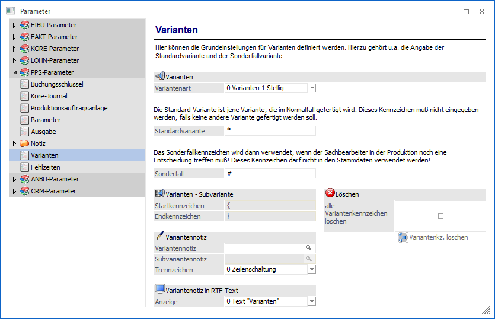
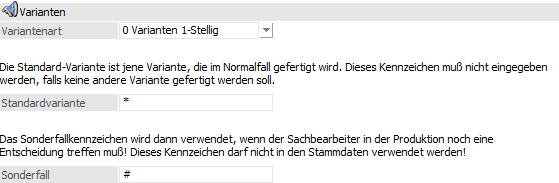
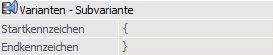
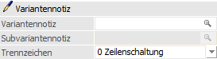
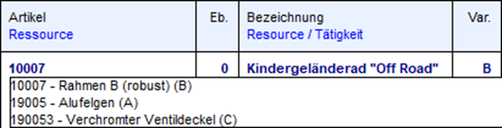
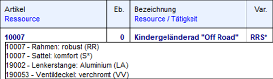
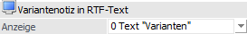
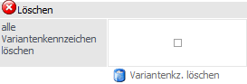
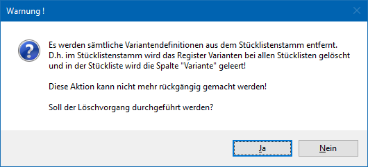

Über den Bereich "PPS-Parameter - Varianten" können die allgemeine Einstellungen für die Varianten der WinLine PPS vorgenommen werden.
Hinweis
Standardmäßig wird das Fenster in einem "Lesemodus" geöffnet, d.h. es können die bestehenden Einstellungen kontrolliert, Änderungen allerdings nicht durchgeführt werden. Hierfür muss zunächst mit Hilfe des Buttons "Bearbeiten" der "Bearbeitungsmodus" aktiviert werden. Alternativ kann diese Aktivierung auch über das Kontextmenü der rechten Maustaste (Funktion "Applikation xxx bearbeiten") erfolgen.

Varianten

Ø Variantenart
Mit Hilfe dieser Auswahlliste kann definiert werden, welche Art von Varianten in der WinLine PPS verwendet werden sollen. Folgende Auswahlen stehen zur Verfügung:
ü 0 - Varianten 1-Stellig
Wenn
diese Einstellung aktiviert ist, so können 1-stellig alphanumerische Varianten
im Stücklistenstamm hinterlegt werden.
ü 1 - Varianten 1-Stellig inkl.
Subvarianten
Wenn diese Einstellung aktiviert ist, so können Subvarianten im
Stücklisten-Stamm hinterlegt werden. D.h. innerhalb einer Stückliste können
unterschiedliche Arten von Varianten verwaltet werden.
ü 2 - Varianten 2-Stellig
Wenn
diese Einstellung aktiviert ist, so können 2-stellig alphanumerische Varianten
im Stücklistenstamm hinterlegt werden.
Hinweis
Der Wechsel der Variantenart ist nur möglich, wenn keine Varianten innerhalb des Stücklistenstamms definiert wurden. Hierauf wird auch bei einer Änderung hingewiesen. Die Löschung kann entweder manuell erfolgen oder mit Hilfe der Option "alle Variantenkennzeichen löschen".
Ø Standardvariante
An dieser Stelle wird das Kennzeichen für die Standardvariante hinterlegt. Wir bei Anlage eines Produktionsauftrags keine explizite Variante ausgewählt, so wird / werden die Standardvariante(n) automatisch verwendet.
Ø Sonderfall
In diesem Feld wird das Kennzeichen für einen Sonderfall definiert. Ein Sonderfall kann nur aus der Belegerfassung der WinLine FAKT heraus gewählt werden und bedeutet, dass die Variantenauswahl abgebrochen wird und ein Hinweistext für die Produktion hinterlegt werden kann.
Varianten - Subvariante

Ø Startkennzeichen / Endkennzeichen
Wenn die Option "2 - Varianten 1-Stellig inkl. Subvarianten" gewählt ist, so können hier die Start- und Endkennzeichen für die Subvarianten hinterlegt werden. Durch diese Kennzeichen werden alle Varianten einer Stücklistenebene (Arbeitsschritt) zusammengefasst.
Variantennotiz

Ø Variantennotiz
An dieser Stelle kann die Variantennotiz mit Hilfe von Variablen definiert werden. Neben den Variablen des Matchcodes (Artikelview und Stücklistenstamm - jeweils bezogen auf den aktuellen Produktionsartikel bzw. die aktuelle Stückliste) stehen folgende Variablen zusätzlich zur Verfügung:
ü T004.C008 - Variantencode der gewählten Variante
ü T004.C009 - Variantentext der gewählten Variante
Beispiel
<VAR:21/2> - <VAR:4/9> (<VAR:4/8>)

Hinweis
Sollten keine Variablen vergeben werden, so wird jeweils nur der Variantentext der gewählten Variante angezeigt.
Ø Subvariantennotiz
An dieser Stelle kann die Subvariantennotiz mit Hilfe von Variablen definiert werden. Neben den Variablen des Matchcodes (Artikelview und Stücklistenstamm - jeweils bezogen auf den aktuellen Produktionsartikel bzw. die aktuelle Stückliste) stehen folgende Variablen zusätzlich zur Verfügung:
ü T004.C000 - Kennzeichen der Subvariante
ü T004.C001 - Bezeichnung der Subvariante
ü T004.C008 - Variantencode der gewählten Variante
ü T004.C009 - Variantentext der gewählten Variante
Beispiel
<VAR:21/2> - <VAR:4/1>: <VAR:4/9> (<VAR:4/8>)

Hinweis
Sollten keine Variablen vergeben werden, so wird jeweils nur der Variantentext der gewählten Variante angezeigt.
Ø Trennzeichen
An dieser Stelle wird das Trennzeichen für den Variantenwechsel angegeben, d.h. wie sollten Varianten bei einer Textanzeige bzw. Druckausgabe voneinander getrennt werden. Folgende Möglichkeiten stehen zur Verfügung:
ü 0 - Zeilenschaltung
ü 1 - Tabulator
ü 2 - Leerzeichen
ü 3 - ,
ü 4 - ;
ü 5 - |
ü 6 - @
Variantennotiz in RTF-Text

Ø Anzeige
An dieser Stelle kann hinterlegt werden, wie die Variantennotiz in der Artikelnotiz der Belegerfassung (d.h. dem dortigen RTF-Text-Feld) dargestellt werden soll.
ü 0 - Text "Varianten"
Es wird
ein Platzhalter mit dem Namen "Varianten" in die Artikelnotiz eingefügt. Dieser
Platzhalter wird während des Drucks aufgelöst und durch die Variantennotiz in
Klarschrift ersetzt. Bei einer Änderung der Variante erhält der Platzhalter
einen entsprechenden neuen Inhalt.
Zusätzlich öffnet sich durch Anwahl des
Platzhalters ein Notizfenster, in welchem der Variantentext in Klarschrift zu
sehen ist (eine Änderung des Textes ist nicht möglich).
Hinweis
Beinhaltet der Artikeltext vor der Auswahl der Varianten keinen Inhalt, so wird der Variantentext zunächst gemäß der Option " 9 - Variantennotiz nicht verlinken" eingefügt. D.h. zur optimalen Nutzung dieser Option sollte automatisiert Text aus dem Artikelstamm in die Belegerfassung übergeben werden (nähere Information entnehmen Sie bitte dem Handbuch der WinLine FAKT).
ü 1 - Variantennotiz als Link
Es
wird ein Platzhalter mit den Namen der gewählten Varianten in die Artikelnotiz
eingefügt. Dieser lesbare Platzhalter wird während des Drucks aufgelöst und
durch die Variantennotiz in Klarschrift ersetzt. Bei einer Änderung der Variante
wird der Platzhalter entsprechend neu gebildet.
Zusätzlich öffnet sich durch
Anwahl des Platzhalters ein Notizfenster, in welchem der Variantentext in
Klarschrift zu sehen ist (eine Änderung des Textes ist nicht möglich).
Hinweis
Beinhaltet der Artikeltext vor der Auswahl der Varianten keinen Inhalt, so wird der Variantentext zunächst gemäß der Option " 9 - Variantennotiz nicht verlinken" eingefügt. D.h. zur optimalen Nutzung dieser Option sollte automatisiert Text aus dem Artikelstamm in die Belegerfassung übergeben werden (nähere Information entnehmen Sie bitte dem Handbuch der WinLine FAKT).
ü 9 - Variantennotiz nicht
verlinken
Es werden die Namen der gewählten Varianten in die Artikelnotiz
eingefügt. Der Text ist in diesem Fall editierbar, hat hierbei allerdings keinen
Bezug mehr zu der soeben ausgewählten Variante. D.h. bei einer Änderung der
Variante werden die Namen der Varianten zusätzlich in die Artikelnotiz
geschrieben.
Achtung
Für die Anzeige der Variantennotiz in der Belegerfassung muss in den Parametern der FAKT (Bereich "Belege - Stücklisten") die Option "Variantennotiz in Beleg- Artikelnotiz übernehmen" aktiviert werden.
Löschen

Ø alle Variantenkennzeichen löschen
Wird diese Checkbox aktiviert, so steht Button "Variantenkz. löschen" zur Verfügung.
Ø Variantenkz. löschen
Wenn auf diesen Button geklickt wird, so erscheint nächst eine Warnmeldung mit der Frage, ob alle Variantendefinitionen aus dem Stücklistenstamm entfernt werden sollen.

Nach einer Bestätigung mit "Ja" werden alle Variantendefinitionen im Stücklistenstamm des Mandanten gelöscht.
Hierbei werden auch eventuell gespeicherte Variantenstrings entfernt, wie auch Werte für den "Variantenvorschlag", die ggfs. im Artikelstamm hinterlegt worden sind.
Hinweis
Diese Funktion kann dafür eingesetzt werden, wenn ein Wechsel der Variantenart vorzunehmen ist, z.B. von "1-Stelligen Varianten" auf "1-Stelligen Varianten inkl. Sub-Varianten".